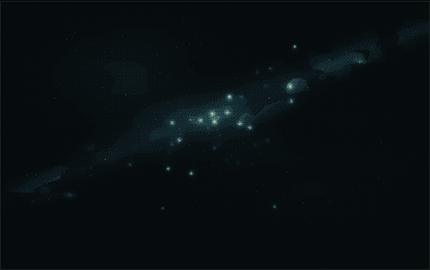

ESTUDIO 14 · DOS LOOKS
Izquierda: nuestro motor de puntos, la retícula que ya conocés. Derecha: el "otro look" que compraría la GPU —degradés suaves, halos, bloom— aproximado en canvas 2D para que puedas juzgarlo sin depender de WebGPU.

Diferencias que importan: en el look fotográfico la luz se acumula y sangra (bloom real), las estrellas tienen halo continuo y la nebulosa tiene volumen. Se pierde, a cambio, la retícula: ya no hay "material de puntos", hay una foto. Ninguno es mejor en abstracto: son dos identidades distintas.